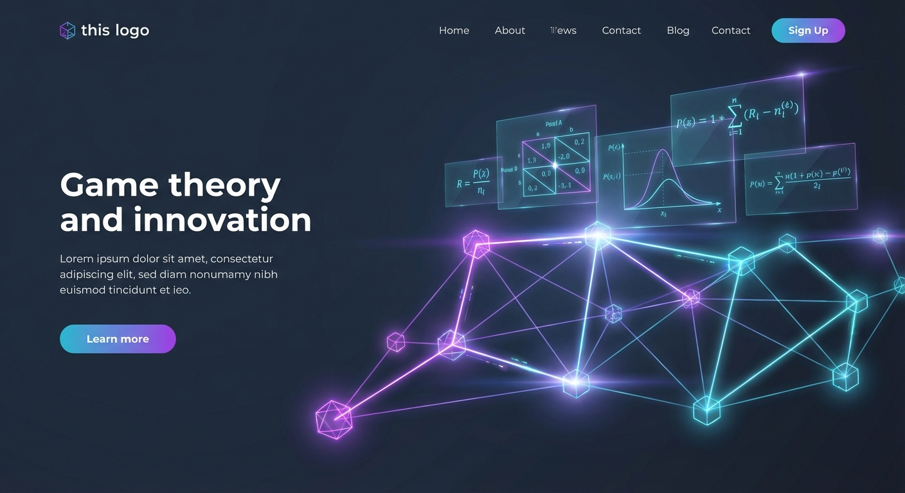

Perform comprehensive strategic analysis. Identify Nash equilibria, construct payoff matrices, and derive optimal strategies for complex multi-agent scenarios.
Try the SimulatorIdentifies pure and mixed strategy equilibria where no player can benefit by unilaterally deviating.
Automatically constructs detailed payoff matrices for all strategy combinations based on scenario descriptions.
Provides actionable advice for each player, including optimal moves, risk assessments, and contingent strategies.
Analyzes long-term dynamics, trigger strategies, and reputation effects in iterated game scenarios.
Finds outcomes where resources are allocated most efficiently, highlighting cooperation opportunities.
Detects strictly and weakly dominant strategies to simplify complex decision trees.
Configure the game scenario on the left and click "Run Analysis" to generate insights.
Matrix will be generated after analysis.
Results will appear here.